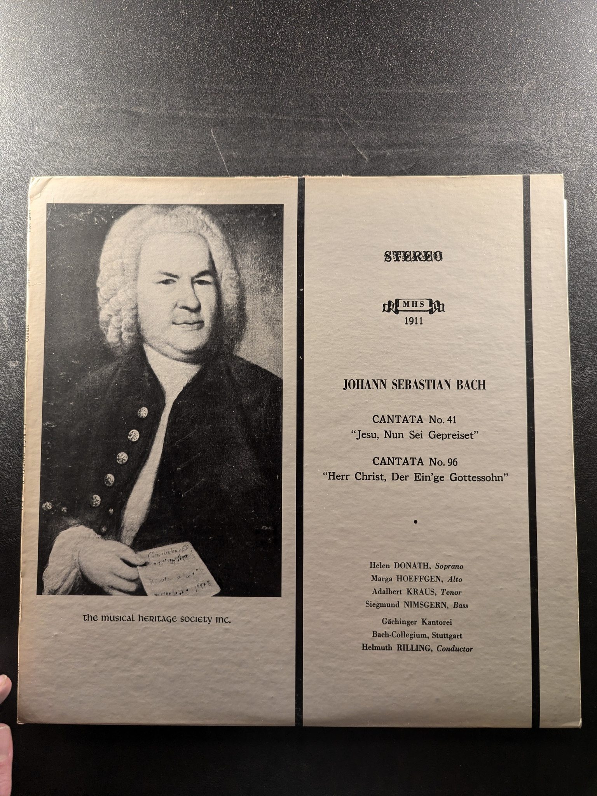
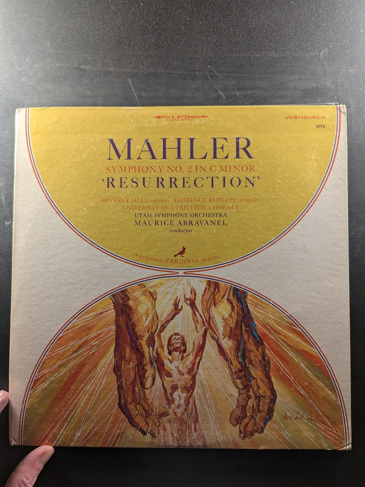
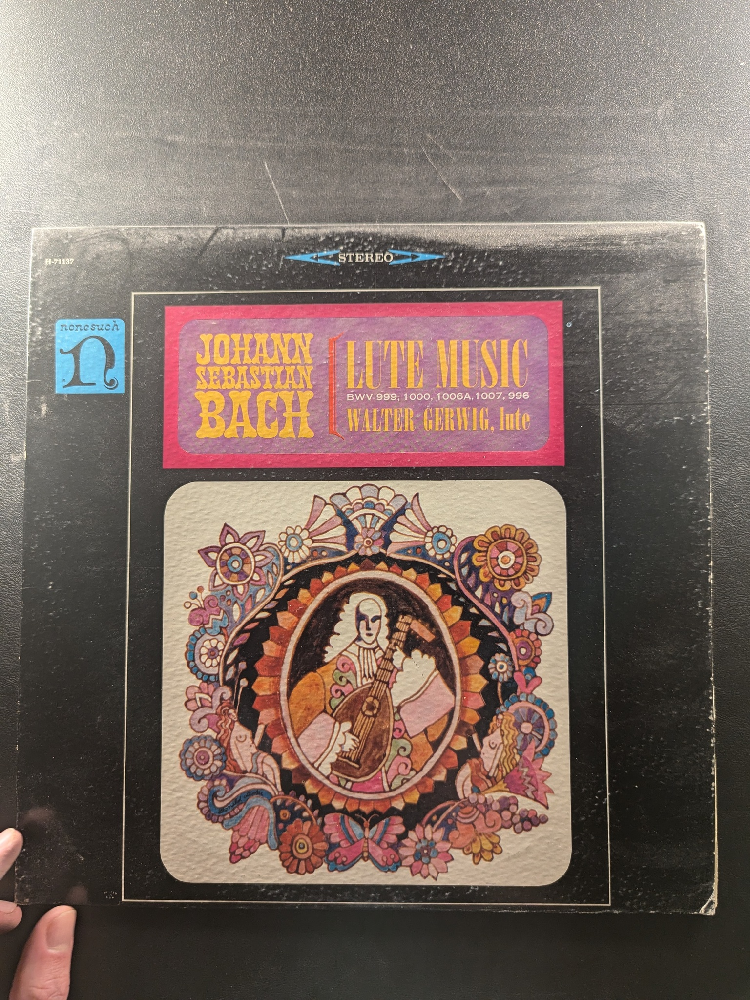

Bach at Royal Festival Hall London
Fernando Germani
Seraphim S-60196
Beethoven Cello Sonatas Nos. 2 & 5
Pablo Casals
Philips PHC-9089
Cantata No. 63 & Cantata No. 151
Johann Sebastian Bach
The Musical Heritage Society Inc. MHS 1343
Cantata No. 58 'Ach Gott, wie manches Herzeleid' / Cantata No. 72 'Alles nur nach Gottes Willen'
Johann Sebastian Bach
Musical Heritage Society Inc. MHS 1418
Cantata No. 41 'Jesu, Nun Sei Gepreiset' / Cantata No. 96 'Herr Christ, Der Ein'ge Gottessohn'
Johann Sebastian Bach
Musical Heritage Society MHS 1911
Cantata No. 142 'Uns ist ein Kind geboren' / Cantata No. 62 'Nun komm, der Heiden Heiland'
Johann Sebastian Bach
The Musical Heritage Society Inc. 1693
Die Kunst der Fuge (The Art of Fugue)
Johann Sebastian Bach
Nonesuch HB-73013
Bach Organ Music from Soissons Cathedral
Maurice & Marie-Madeleine Duruflé
Angel S-36607
J.S. Bach: Violin Concertos, Album 2
Itzhak Perlman
Angel S-37076
Symphony No. 2 in C Minor 'Resurrection'
Mahler
Vanguard Cardinal Series VCS-10003/4
The 16th-Century French Guitar
Jean-Claude Orliac, Betho Davezac
Musical Heritage Society MHS 4419
Guitar Music and Songs of the Spanish Renaissance
Renata Tarrago, Guitar / Rosa Barbany, Soprano
Everest 3197
Spanish Vihuelists of the 16th Century
Luis de Milán, Enrique de Valderrábano
MHS 1894
Spanish Vihuelists of the 16th Century
Luys Narváez, Diego Pisador, Estaban Daza
MHS 3331
Spanish Vihuelists of the 16th Century
Alonso Mudarra, Miguel de Fuenllana
Not specified MHS 3077
Lute Music
Johann Sebastian Bach
Nonesuch H-71137
Baroque Lute Recital
Toyohiko Satoh
Telefunken KS 3164
Lute Recital
Anthony Bailes
EMI S-36884
La Rhétorique des Dieux
Denis Gaultier
Das Alte Werk
Romeo and Juliet / Francesca da Rimini
Tchaikovsky
RCA Victrola VICS-1197
Symphonic Variations, Op.78 / Scherzo capriccioso, Op.66 / Notturno, Op.40
Antonín Dvořák
Nonesuch H-71271
Dvořák: Quartet in F Major, 'American'; Smetana: Quartet in E Minor, 'From My Life'
The Juilliard Quartet
Columbia MS 7144
Sinfonietta · Taras Bulba
Leoš Janáček
Deutsche Grammophon 2530 075
A Treasury of English Songs
Janet Baker
Angel S-36566
Beethoven: The Ninth Symphony
Philadelphia Orchestra / Eugene Ormandy / The Mormon Tabernacle Choir
Columbia Masterworks ML 5915
{kind=link}
{kind=link}
{kind=link}
{kind=link}
{kind=link}
{kind=link}
{kind=link}
{kind=link}
{kind=link}
{kind=link}
{kind=link}
{kind=link}
{kind=link}
{kind=link}
{kind=link}
{kind=link}
{kind=link}
{kind=link}
{kind=link}
{kind=link}
{kind=link}
{kind=link}
{kind=link}
{kind=link}
{kind=link}